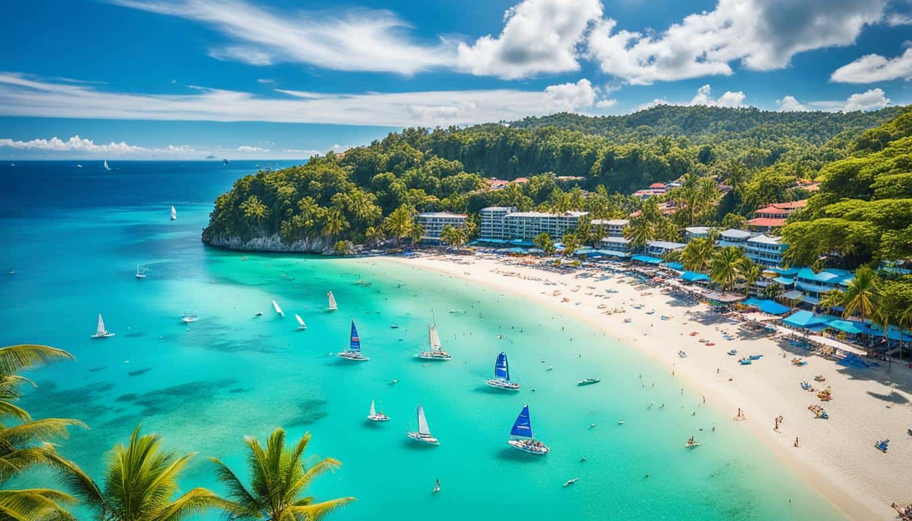
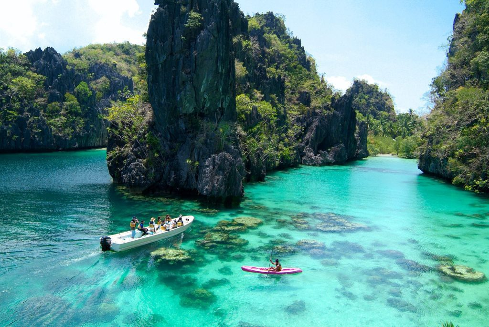
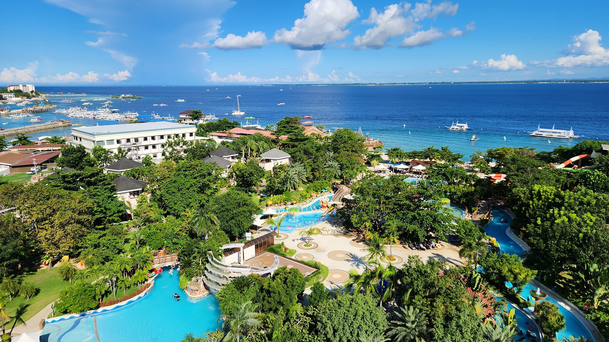
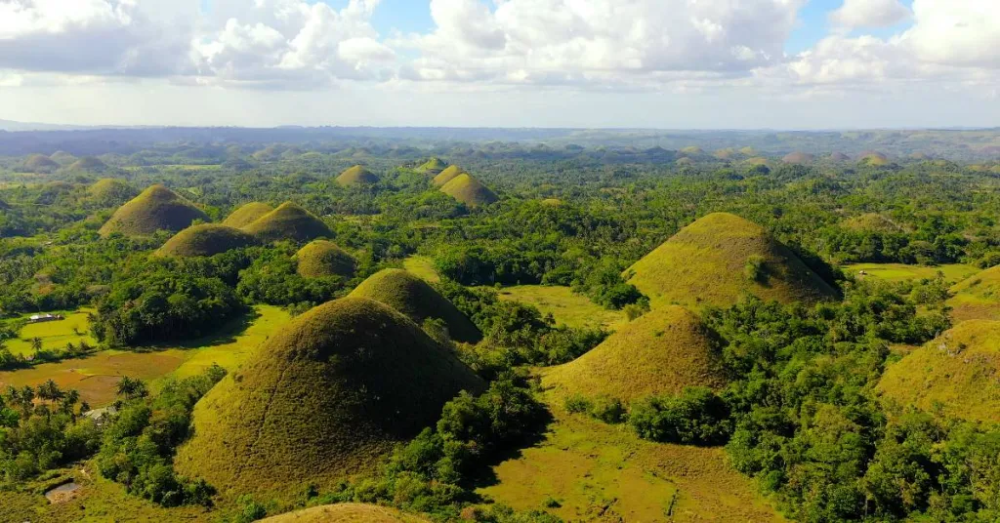
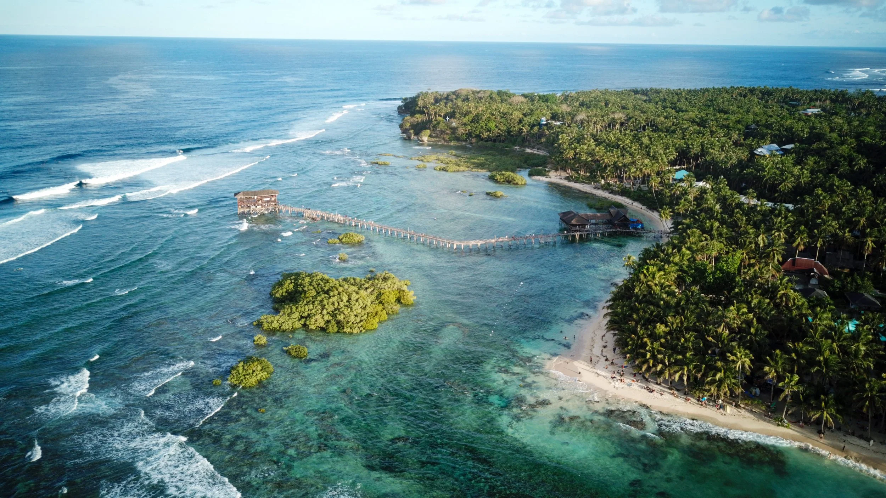
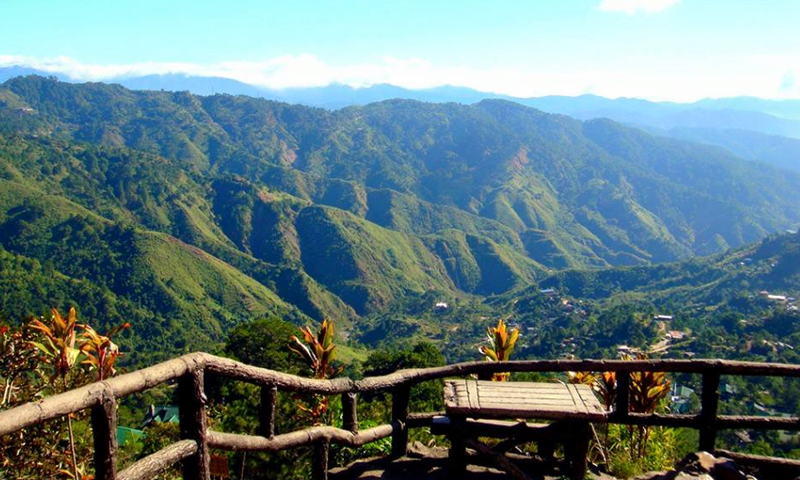
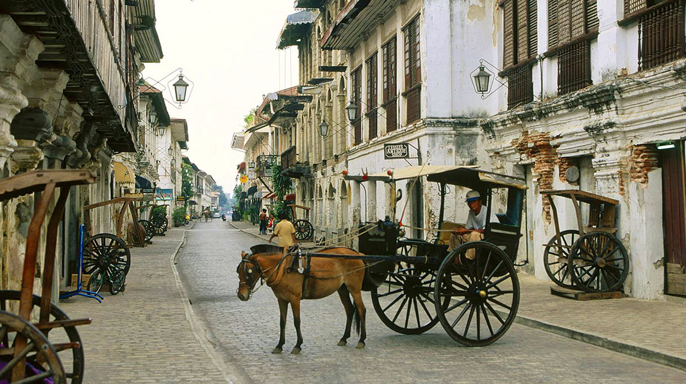
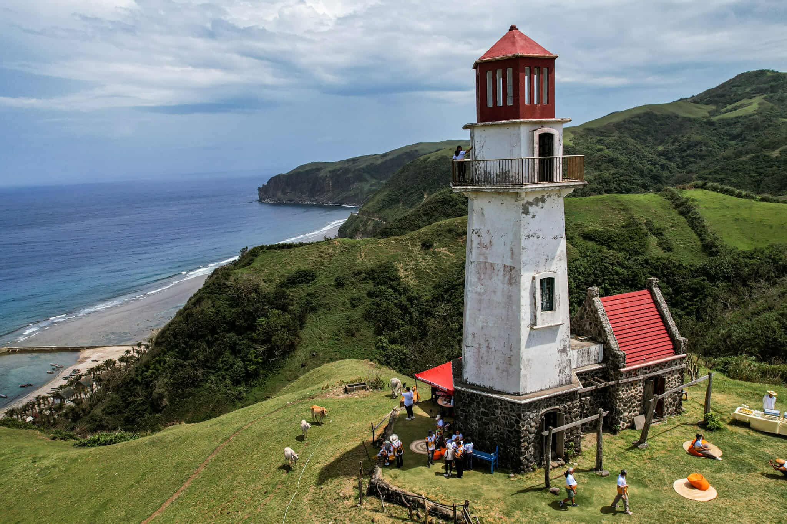

-
Boracay, Aklan
Famous for its powdery white sand and vibrant nightlife, Boracay is one of the most popular tourist destinations in the Philippines. After its rehabilitation, the island became cleaner and more sustainable, offering both fun and relaxation. Visitors can enjoy activities such as parasailing, island hopping, scuba diving, and sunset watching along the iconic White Beach.
 -
Palawan (El Nido and Coron)
Often called the “Last Frontier of the Philippines,” Palawan is known for its stunning limestone cliffs, turquoise lagoons, and hidden beaches. El Nido and Coron are must-visit spots for snorkeling and diving, where you can see colorful coral reefs, shipwrecks, and diverse marine life.
 -
Cebu
Known as the “Queen City of the South,” Cebu combines urban energy with natural wonders. You can visit historical landmarks like Magellan’s Cross, swim with whale sharks in Oslob, or chase waterfalls in Kawasan. Nearby islands such as Bantayan and Malapascua are perfect for quiet beach getaways.
 -
Bohol
Home to the famous Chocolate Hills and the tiny tarsier, Bohol offers a mix of natural beauty and adventure. You can also enjoy river cruises, explore caves, and relax on Panglao Island’s beaches.
 -
Siargao Island
Dubbed the Surfing Capital of the Philippines, Siargao attracts both surfers and nature lovers. The island features beautiful lagoons, rock pools, and coconut tree-lined roads. The Magpupungko Rock Pools and Sugba Lagoon are among the must-see spots.
 -
Baguio City
Known as the “Summer Capital of the Philippines,” Baguio offers cool weather, pine-scented air, and scenic mountain views. Visitors can enjoy parks like Burnham and Mines View, explore art galleries, and taste local delicacies such as strawberry taho and ube jam.
 -
Vigan, Ilocos Sur
A UNESCO World Heritage Site, Vigan is famous for its preserved Spanish colonial architecture. Walking along Calle Crisologo feels like stepping back in time. Tourists can enjoy horse-drawn carriage rides and try local dishes such as empanada and longganisa.
 -
Banaue Rice Terraces, Ifugao
Carved into the mountains over 2,000 years ago, the Banaue Rice Terraces are a breathtaking testament to the skill and hard work of the Ifugao people. Often called the “Eighth Wonder of the World,” the terraces remain one of the most iconic symbols of the Philippines.

-
Davao City
Located in Mindanao, Davao is known for being the home of Mount Apo, the highest peak in the Philippines. The city also offers a mix of modern attractions and nature spots, including the Philippine Eagle Center and Samal Island, just a short boat ride away.

-
Batanes
The northernmost province of the Philippines, Batanes is admired for its peaceful atmosphere, rolling hills, and stone houses that reflect Ivatan culture. The scenery is unlike anywhere else in the country, making it a perfect destination for travelers seeking tranquility and breathtaking landscapes.
